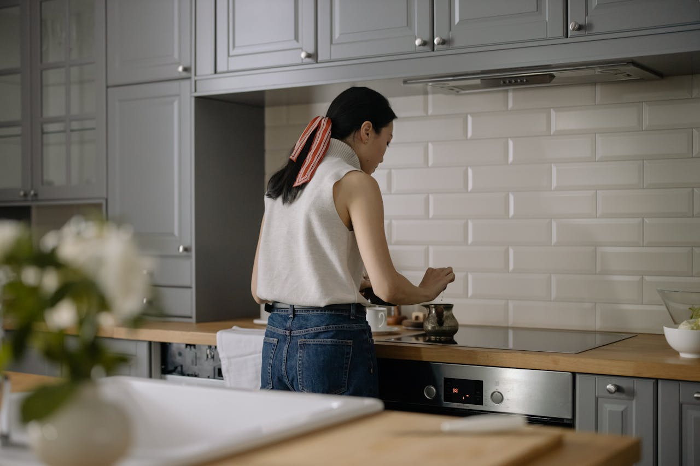

O que é o Programa e-Lar?



É um apoio do Fundo Ambiental para ajudar as famílias a substituir equipamentos domésticos a gás (esquentadores, fogões, fornos) por equipamentos elétricos novos e mais eficientes (classe A ou superior). O objetivo é aumentar a segurança, reduzir a conta de energia e o impacto ambiental, através de um voucher que não exige pagamento adiantado.
Quem se pode candidatar?
Grupo I e II (Vulneráveis)
Pessoas que beneficiam da Tarifa Social de Energia Elétrica (TSEE) ou que participam no programa "Bairros + Sustentáveis".
- ✔ Apoio mais elevado.
- ✔ Transporte e instalação incluídos no apoio.
Grupo III (Público Geral)
Qualquer pessoa com um contrato de fornecimento de eletricidade em seu nome.
- ✔ Apoio para a compra de equipamentos.
- ✘ Transporte e instalação não incluídos.
Requisito Comum
O candidato deve ser maior de idade e o contrato de eletricidade da habitação tem de estar em seu nome, mesmo que a casa seja arrendada.
Como Submeter a Candidatura: Passo a Passo
Registo no Portal
Aceder ao site www.fundoambiental.pt e criar um registo. Mesmo quem já se registou para apoios anteriores, precisa de um novo registo específico para o e-Lar.
Preencher Formulário
Com o registo feito, preencher o formulário de candidatura ao programa e-Lar com os dados pessoais e da habitação e submeter os documentos necessários.
Receber e Aceitar
Após aprovação, o candidato recebe um email para assinar o Termo de Aceitação na plataforma. Tem 5 dias úteis para o fazer. Depois de aceitar, recebe o "Voucher e-Lar" digital.
Usar o Voucher
Com o voucher (válido por 60 dias), o beneficiário dirige-se a uma loja da rede de fornecedores qualificados (lista no site) para escolher o equipamento. O fornecedor trata de tudo a partir daqui.
O que é preciso ter à mão?
- ✓ Nome completo
- ✓ NIF (Número de Contribuinte)
- ✓ NISS (Número de Segurança Social)
- ✓ Morada completa da habitação
- ✓ Código CPE (encontra-se na fatura da eletricidade)
- ✓ Fotografia nítida do equipamento a gás que vai substituir
Dúvidas Frequentes e Alertas
ALERTA IMPORTANTE PARA O FORMADOR:
A página de submissão da candidatura não está otimizada para telemóveis. É fundamental que o formando faça a candidatura num computador para evitar erros e dificuldades.
"O meu forno já é elétrico, mas é antigo. Pode ser substituído?"
Não. O programa destina-se exclusivamente à substituição de equipamentos que funcionam a gás (ex: gás de botija ou gás natural) por novos equipamentos elétricos. Um equipamento elétrico antigo não é elegível para troca.
"Tenho de pagar alguma coisa e depois sou reembolsado?"
Não. O sistema funciona com um voucher. O beneficiário não precisa de adiantar dinheiro, a não ser que o preço do equipamento escolhido seja superior ao valor máximo do apoio. Nesse caso, paga apenas a diferença.
"O que acontece ao meu equipamento antigo?"
O fornecedor do novo equipamento é obrigado a recolher o antigo no momento da entrega e a encaminhá-lo para reciclagem, sem custos para o beneficiário.
Valores Máximos do Apoio por Equipamento
O programa financia apenas a troca de um equipamento a gás por um elétrico equivalente.